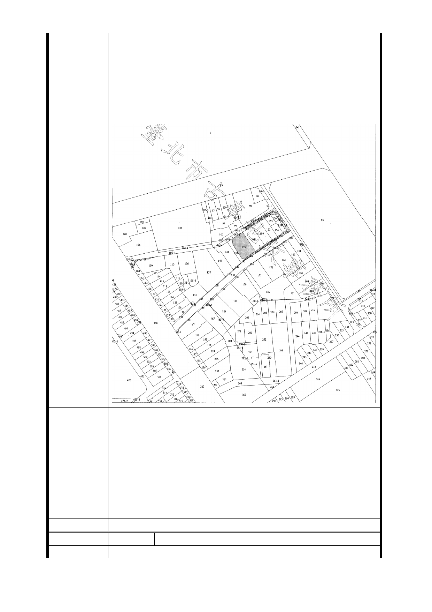

陽台及公設等面積）可以滿足更新前的合法室內實際使用坪
數！並非權狀上所記載之坪數）。
（2）建議辦法：請比照新北市 2.5 倍之容積獎勵，以確保目
前本區住戶之權益。另若本區住戶未能滿足目前參與前的合
法可使用坪數，請減少台北市政府分回之比率。再則若本區
獎勵之容積未能完全於基地內蓋滿，亦請同意得以移轉容基
於他處興建或放寬本區建築法規限制，以符合獎勵之精神。
1.有關土地開發區(捷)基地開發規模已考量未來都市發展予
以提高，經本府目前研析原則係以土地開發區（捷）基地，
依原建築容積(原容如低於法容以法容為準)+0.5 倍法容+捷
市府回應
意見
運獎勵之原則辦理。惟仍應以「一坪換一坪」為上限（平均
值）。
2.捷四用地係由南昌路 31 巷（6 公尺）及南海路 2 巷（4 公
尺）所夾之狹長基地，若南昌路 31 巷及南海路 2 巷一併變更
為 8 公尺以上道路，將減少基地面積，影響該基地開發，建
議仍維持原都市計畫道路寬度。
委員會決議 同編號交一－1 委員會決議。
編 號 捷四-5A 陳情人 楊○桑等 31 人聯合陳情
建議位置
- 31 -